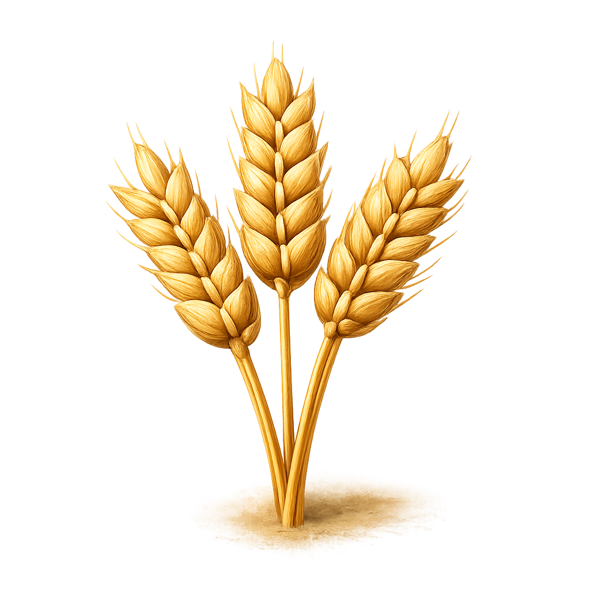

10. 🏕 Jak żyliPrzez tysiące lat ludzie żyli inaczej niż dziś.
Najpierw prowadzili koczowniczy tryb życia, a później zaczęli osiedlać się na stałe.
Przyjrzyj się obu sposobom życia i znajdź najważniejsze różnice.
🏹 Koczowniczy tryb życia

- 🦌 polowanie
- 🍓 zbieractwo
- 🕳 jaskinie
- 🚶 ciągłe wędrówki
🏠 Osiadły tryb życia

- 🌾 rolnictwo
- 🐑 hodowla zwierząt
- 🏡 stałe domy
- 👨👩👧👦 osady
🔍 Znajdź różnice
- Kto częściej wędrował?
- Kto miał stałe domy?
- Skąd zdobywano pożywienie?
- W którym stylu życia powstawały osady?

🦉 Sowa Historyk
Przejście z koczowniczego na osiadły tryb życia było jedną z największych zmian w dziejach człowieka.
➜ Który sposób życia był według Ciebie łatwiejszy?